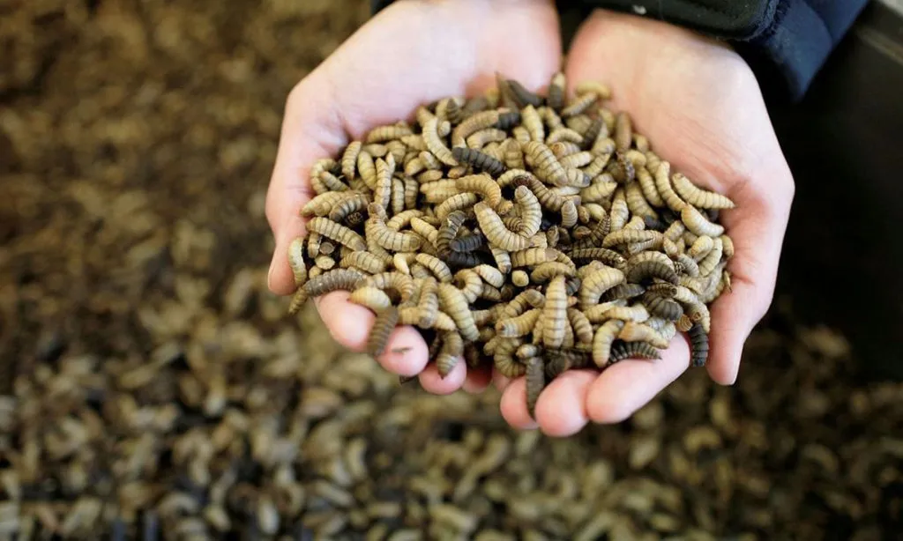
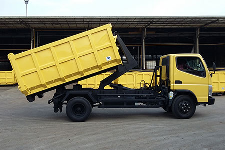
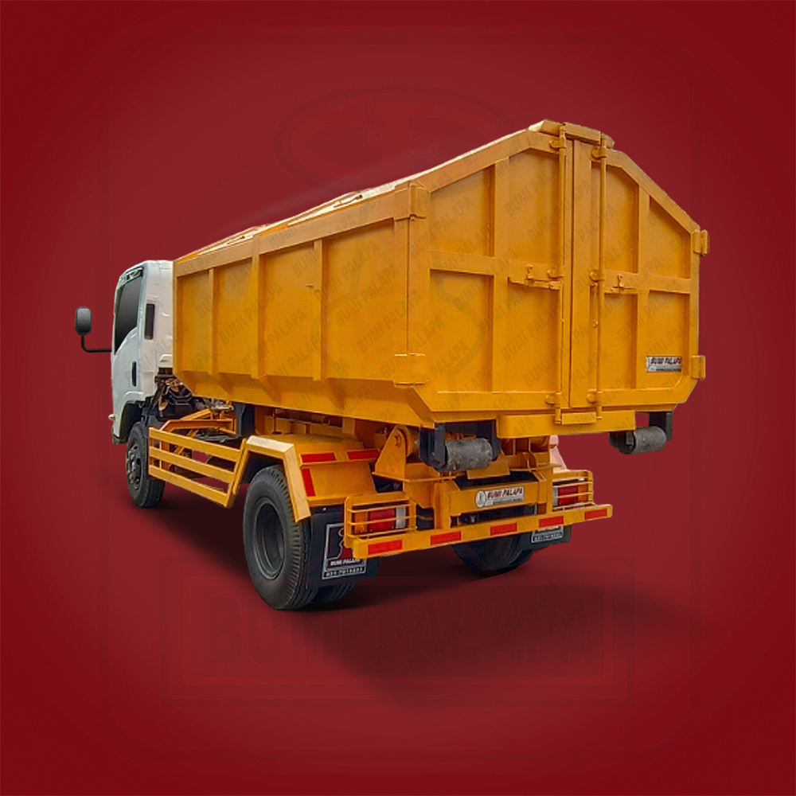
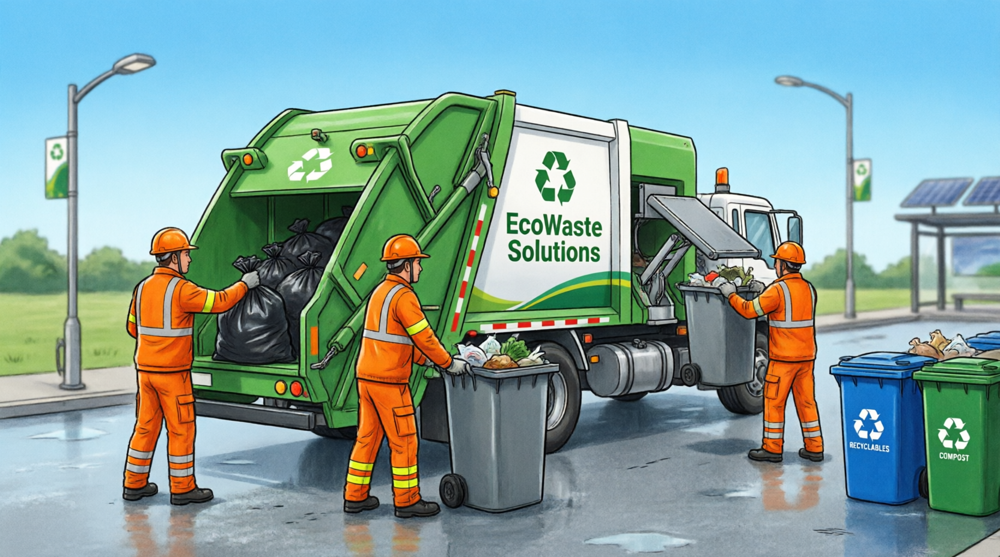
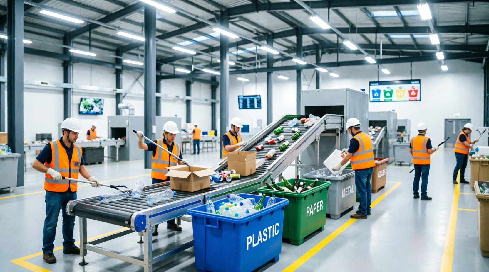
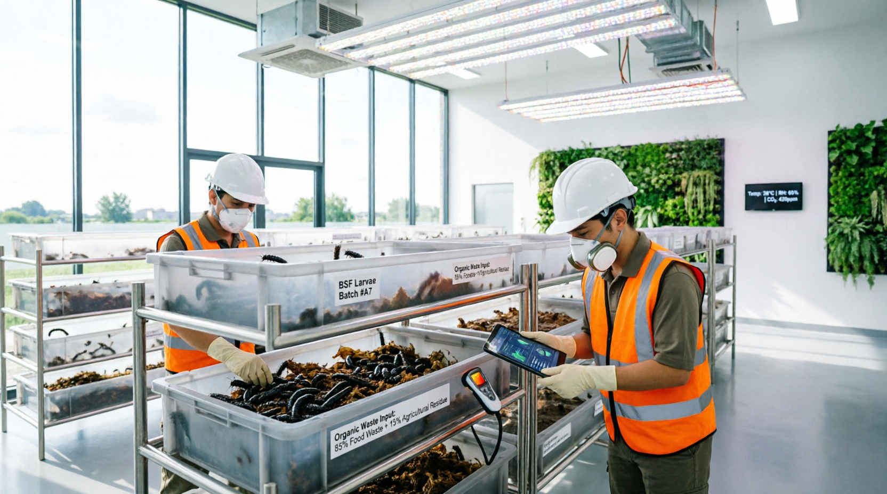
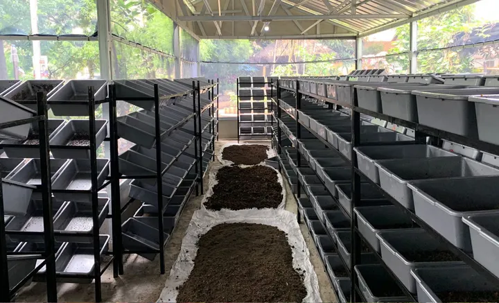

Solusi pengelolaan limbah profesional dan berkelanjutan dengan sistem pemilahan modern, pengambilan terjadwal, dan pengolahan organik menggunakan teknologi Maggot BSF
Sistem pemilahan limbah yang terstruktur dan profesional untuk memaksimalkan daur ulang dan pengolahan
Limbah dikumpulkan dari sumbernya (rumah tangga, restoran, industri) dengan wadah terpisah sesuai kategori
Tim profesional melakukan pemilahan manual untuk memisahkan limbah organik, anorganik, dan bahan berbahaya
Limbah dikategorikan menjadi: organik (sisa makanan), anorganik (plastik, kertas, logam), dan B3 (bahan berbahaya)
Limbah yang sudah dipilah dipadatkan untuk efisiensi penyimpanan dan transportasi
Limbah disimpan di fasilitas khusus dengan standar kebersihan dan keamanan yang ketat
Limbah didistribusikan ke fasilitas pengolahan sesuai jenisnya untuk proses selanjutnya
Sistem pengambilan limbah yang terjadwal dan responsif untuk kemudahan mitra kami
Mitra dapat memesan pengambilan limbah melalui telepon, WhatsApp, atau aplikasi dengan mudah
Tim kami akan mengkonfirmasi jadwal pengambilan sesuai ketersediaan dan lokasi
Armada profesional kami datang ke lokasi untuk mengambil limbah dengan prosedur yang aman
Pencatatan volume dan jenis limbah untuk dokumentasi dan pelaporan
Proses pembayaran yang transparan dan cepat sesuai kesepakatan
Evaluasi layanan untuk peningkatan kualitas berkelanjutan
Teknologi ramah lingkungan untuk mengolah limbah organik menjadi sumber daya bernilai ekonomi
Maggot BSF adalah solusi inovatif untuk mengolah limbah organik seperti sisa makanan, sampah pasar, dan limbah restoran. Larva lalat Black Soldier Fly memiliki kemampuan luar biasa dalam mengonsumsi limbah organik hingga 80% dari berat tubuhnya.
Dapat mengolah 1 ton limbah organik dalam 14-21 hari
95% limbah terkonversi menjadi biomassa maggot dan pupuk organik
Maggot kering menjadi pakan ternak berkualitas tinggi (protein 40-45%)
Mengurangi emisi gas metana dan bau tidak sedap secara signifikan
Kasgot (bekas maggot) menjadi pupuk organik berkualitas tinggi untuk pertanian

Limbah Terkonversi
Tahapan pengolahan limbah organik menggunakan teknologi Maggot BSF
Telur BSF ditetaskan dalam kondisi terkontrol untuk menghasilkan larva berkualitas
Limbah organik dicacah dan difermentasi sebagai media pakan maggot
Larva dipelihara selama 14-21 hari dengan monitoring suhu dan kelembaban
Maggot dipanen dan dipisahkan dari kasgot (bekas media) secara higienis
Maggot dikeringkan untuk menghasilkan tepung maggot sebagai pakan ternak
Produk dikemas dan siap didistribusikan ke peternak dan petani mitra
Lihat detail lengkap transformasi strategis dan operasional pengelolaan sampah terpadu RAJ Group
Memuat dokumen...
Dokumentasi armada dan fasilitas pengelolaan limbah profesional kami






Ton Limbah/Bulan
Mitra Aktif
Limbah Terkelola
Layanan Pengambilan
Mari bersama-sama menciptakan lingkungan yang lebih bersih dan berkelanjutan dengan sistem waste management profesional
Hubungi Kami Sekarang